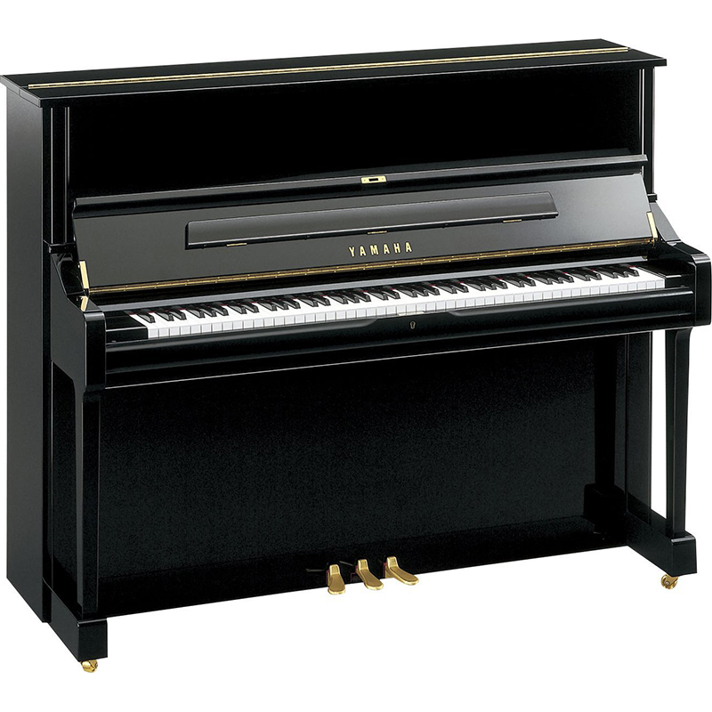
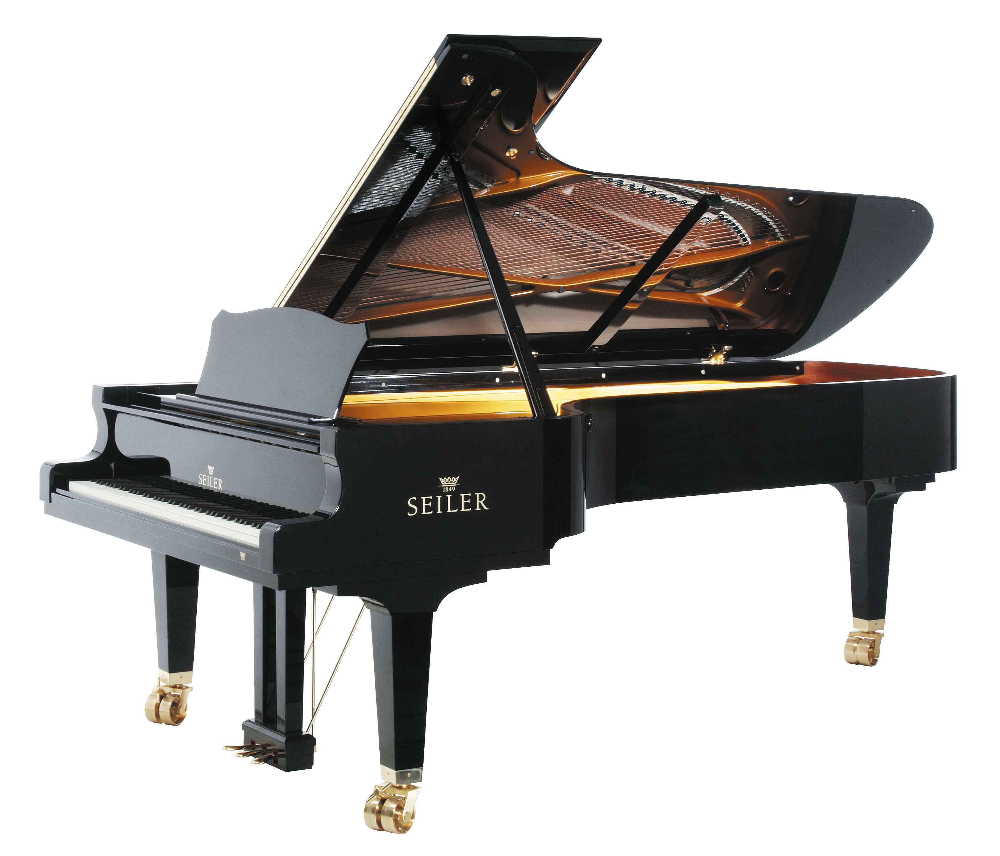
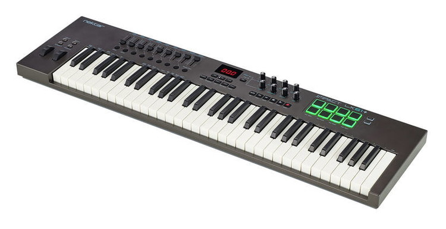

피아노(piano)는 대표적인 건반악기로서 피아노포르테(pianoforte)의 준말이다.
나무로 된 작은 망치가 강철 프레임에 고정된 피아노줄을 때려서 소리낸다.
18세기 초 이탈리아의 바르톨로메오 크리스토포리(Christofori, B.)가 고안하여 독일에서 완성하였다.
오늘날 널리 보급되고 있는 일반적인 유건타현 악기이다. 피아노가 발명되기 이전에는 쳄발로와 클라비코드가 가장 많이 보급된 건반악기였으나,
1709년에 이탈리아 사람인 쳄발로 제작가 바르톨로메오 크리스토포리(Bartolommeo Cristofori 1655-1731)가 쳄발로의 몸통(胴)을 써서 ‘피아노 포르테’라고 이름붙인 악기를 만들었다.
이것이 피아노의 효과적인 최초의 고안이어서, 그가 피아노의 발명자로 되어 있다.
쳄발로나 클라비코드는 음이 작아 실내연주용 외는 쓰이지 않던 것이었으나 이 발명은 현을 펠트로 된 해머로 쳐서 음을 내고,
댐퍼(펠트세로 음향을 정지시키는 것)를 붙인 것으로 거의 오늘날의 피아노와 다름이 없는 것이었다.
이로써 음은 힘차고 크게 되어 넓은 스테이지의 연주나 그 밖의 악기와 조화를 이루는 합주도 가능하게 되었다.
그간 독일이나 프랑스에서도 제조기술의 연구가 종종 있었고 18세기의 중엽(바흐나 헨델이 일생을 마칠 무렵)부터 각국에서 본격적으로 피아노를 제작하게 되었다.
그 뒤 많은 개량이 가해졌고 특히 현이 굵어졌으며 액션(손가락의 누른 키가 현을 칠 때까지의 장치)이나 댐퍼 등의 정교한 것 등이 나오게 되어 현재의 피아노에 이르기까지 진보하였다.
피아노의 원래 이름은 피아노포르테였다.
업라이트 피아노

업라이트는 세운꼴의 피아노라는 의미이며, 이는 그랜드 피아노와 구별짓기 위함이라고 한다.
그랜드 피아노는 현을 눕힌 꼴의 피아노이지만,
업라이트는 실제로 현이 세워져 있다.
또한 공간을 적게 차지하기 위해 현을 1옥타브 레를 기준으로 두 파트로 분리시켜 교차시켜 놓았다.
업라이트는 그랜드 피아노와 비교해서 몇가지 장단점을 가지고 있다.
가격이 매우 저렴하고 크기가 작음과 동시애 보급화가 잘 되어있다.
그래서 주로 가정용, 학원용, 교회등에 구비 되어있다.
그러나 업라이트 피아노가 저렴하고 양산형이라는 것만 제외하면 모든 방면에서 그랜드 피아노의 하위호환임을 의미한다.
그랜드 피아노

공연장, 문화회관(시민회관), 강당, 콘서트홀, 음대 피아노전공 등에서 흔히 볼 수 있는 큰 피아노이며 피아니스트들의 공연 영상이나 직접 보러간다면 봤을 법한 피아노이다.
가정용이나 보급용으로 쓰이는 업라이트 피아노와 다르게 크기가 매우 크다.
그랜드 피아노는 눕힌 꼴의 피아노라고 할 수 있는데, 업라이트 피아노와 구분하기 위해 말한다.
해머액션과 현을 그대로 눕혀놓았으며 뚜껑을 완전히 열 수 있기때문에 업라이트 피아노보다 훨씬 웅장한 소리가 난다.
대신 규모가 규모인지라 일반 가정집에 들여놓기가 매우 까다로우며 소리가 너무 웅장하여 일반 가정집에서 구비하고 연주하려면 방음시설은 필수로 갖춰야 하며,
방음재나 방음부스로 방음을 해결해야 소음을 차단할 수 있다.
마스터 키보드

마스터 키보드의 소개
최근에 등장한 마스터 키보드는 피아노 건반 모양의 입력도구 이며
속칭 MIDI 키보드라고 불린다.
주 사용 목적은 USB 케이블로 미디 신호를 주고 받으며 랙 형의 하드웨어 신디사이저나 컴퓨터 내의 가상악기를 편히 사용하는 것이다.
이름의 유래는 MIDI 용어 '마스터'(MIDI에서 신호를 보내는 쪽을 '마스터', 신호를 받아 그대로 연주하는 쪽을 '슬레이브'라고 하는데, 이 녀석은 음색을 낼 수 없어서 언제나 마스터 역을 하게 된다.)
당연히 건반이 달리고 MIDI 신호 출력기능이 있는 신디사이저, 키보드또한 MIDI Keyboard Controller 에 포함된다. 단지 이쪽은 속칭 마스터 키보드로 불리지는 않는다.
마스터 키보드의 종류
종류는 건반 수와 작동 방식에 따라 나뉘게 된다.
이 중 건반 수에는 25건반, 49건반, 61건반, 76건반, 88건반(피아노와 동일 규격), 96건반이 있다.
물론 가격 역시 건반숫자에 비례한다.
작동 방식에는 Synth Action(신스 액션), Semi-Weighted Action(세미-웨이티드), Fully-Weighted(풀-웨이티드)가 있으며, 역시 갈수록 비싸지는 경향이 있다.
마스터 키보드의 건반개수에 따른 차이점
25건반은 사실상 휴대용 개념으로 일반적인 연주가 거의 불가능하지만 간단한 멜로디와 리듬은 가능하다 49건반은 과거부터 키보드가 달린 규격으로 이 규격부터는 제대로 된 연주를 할 수 있다. 61건반은 베이스 키보드는 크기도 생각보다 크지 않음에도 옥타브를 조절해서 대부분의 악기 음역대를 커버할 수 있기에 다방면으로 쓰기 좋은 규격이다. 76건반 같이 70개 대의 건반을 가진 마스터 키보드는 보기 드물다. 크기가 애매한게 이유인듯 하다., 88건반은 대부분의 오케스트라 샘플 가상악기의 경우엔 주법의 변환과 음역대 등을 이유로 88건반을 권장하는데 이때문에 오케스트레이션을 주로 하는 작곡가들이 주로 사용한다고 한다.
마스터 키보드의 작동방식
Synth Action : 터치감이 매우 가벼워서 피아노 전공자들에게는 다소 생소한 방식. Semi-Weighted Action: 대부분의 마스터 건반이 사용하고 있는 방식이며 위 방식보다 덜 가벼워서 적응하기 편하다. Fully-Weighted Action : 실제 피아노의 무게를 재현해 냈기 때문에 피아노 전공자들에게 적응하기 쉬운 방식, 실제 피아노를 재현한 만큼 무게와 동시에 가격이 높다.
마스터 키보드를 쓰는 이유
마스터 키보드를 쓰는 이유는 크게 두가지를 들수 있다.
1. 가볍기 떄문에 휴대성이 매우 높다.
2. 다양한 악기를 가상악기 프로그램을 사용하여 손에 익은 악기로 연주가 가능하다.